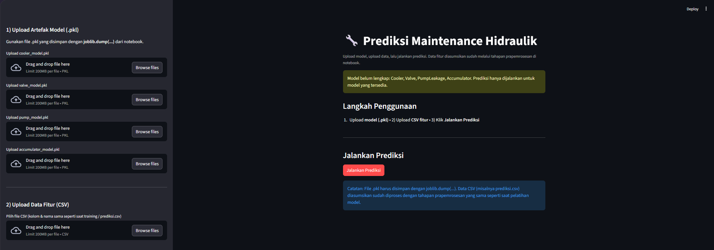
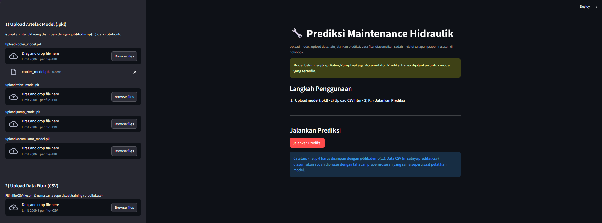
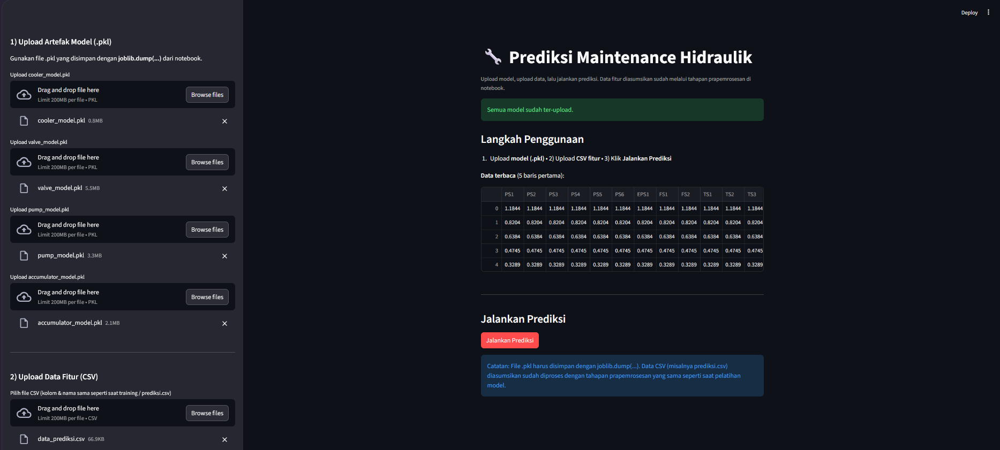
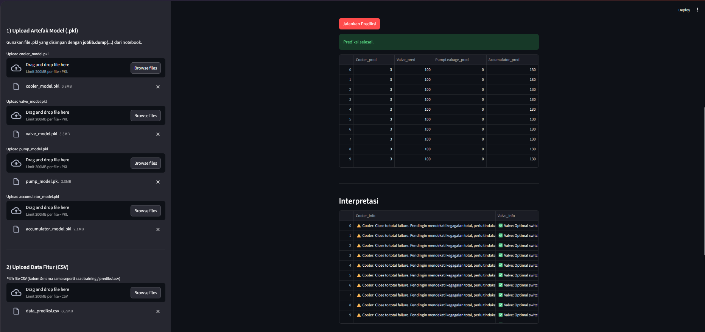
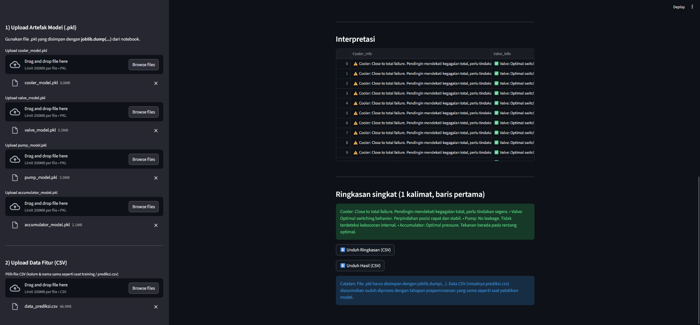

Masalah
Data pemantauan kondisi sistem hidraulik mencakup beragam parameter kondisi yang perlu diolah untuk membantu mengidentifikasi kondisi komponen.
Sistem Prediktif Pemeliharaan Hidraulik dengan Pendekatan Algoritma Histogram Gradient Boosting
Penelitian dan aplikasi machine learning untuk memprediksi kondisi komponen sistem hidraulik berdasarkan data pemantauan kondisi, kemudian mengintegrasikan model ke dalam aplikasi prediksi berbasis Streamlit.
Penelitian ini membangun model klasifikasi Histogram Gradient Boosting untuk empat sasaran kondisi sistem hidraulik. Model kemudian diintegrasikan ke aplikasi Streamlit agar pengguna dapat mengunggah data dan menjalankan prediksi.
Data pemantauan kondisi sistem hidraulik mencakup beragam parameter kondisi yang perlu diolah untuk membantu mengidentifikasi kondisi komponen.
Membangun model klasifikasi Histogram Gradient Boosting untuk memprediksi kondisi beberapa komponen sistem hidraulik, lalu mengimplementasikannya pada aplikasi Streamlit.
Klasifikasi kondisi cooler.
Klasifikasi kondisi valve.
Klasifikasi kebocoran internal pompa.
Klasifikasi kondisi hydraulic accumulator.
Tahapan penelitian dari penyiapan data hingga penerapan model dalam aplikasi Streamlit.
Data kondisi sistem hidraulik menjadi masukan untuk penelitian.
Data disiapkan sebelum digunakan dalam pemodelan.
Histogram Gradient Boosting digunakan untuk membangun model klasifikasi pada empat sasaran.
Model klasifikasi dilatih untuk memprediksi kondisi setiap sasaran.
Hasil model dinilai menggunakan accuracy dan F1-macro.
Model digunakan kembali pada aplikasi prediksi berbasis Streamlit.
Accuracy dan F1-macro ditampilkan untuk seluruh sasaran agar hasil setiap model dapat dibaca dan dibandingkan.
| Sasaran | Akurasi | F1-macro |
|---|---|---|
| Cooler | 99.8% | 99.8% |
| Valve | 83.4% | 78.6% |
| Internal Pump Leakage | 96.8% | 96.3% |
| Hydraulic Accumulator / Bar | 98.9% | 98.7% |
Aplikasi Streamlit menyediakan alur unggah berkas model dan data, menjalankan prediksi untuk model yang tersedia, lalu menyajikan hasilnya. Tampilan yang tersedia menunjukkan aplikasi prediksi dan status kelengkapan model.
Unggah berkas model (.pkl) dan data masukan untuk proses prediksi.



Jalankan prediksi menggunakan model yang telah dimuat.


Tabel prediksi dan interpretasi kondisi komponen, ringkasan, serta ekspor hasil dan ringkasan dalam CSV.

Dalam penelitian ini saya menyiapkan data, membangun dan mengevaluasi model, lalu menerapkannya pada aplikasi Streamlit. Proses tersebut membantu saya memahami alur kerja machine learning secara menyeluruh.
Melakukan penelitian predictive maintenance pada sistem hidraulik serta mengolah dan menyiapkan data untuk pemodelan.
Membangun model klasifikasi untuk sasaran cooler, valve, internal pump leakage, dan hydraulic accumulator.
Mengevaluasi model menggunakan accuracy dan F1-macro, kemudian mengintegrasikan model tersimpan ke aplikasi Streamlit. Berkas model yang digunakan: cooler_model.pkl, valve_model.pkl, pump_model.pkl, dan accumulator_model.pkl.
Memahami tahapan machine learning, mulai dari pengolahan data dan pemodelan hingga evaluasi serta implementasi.